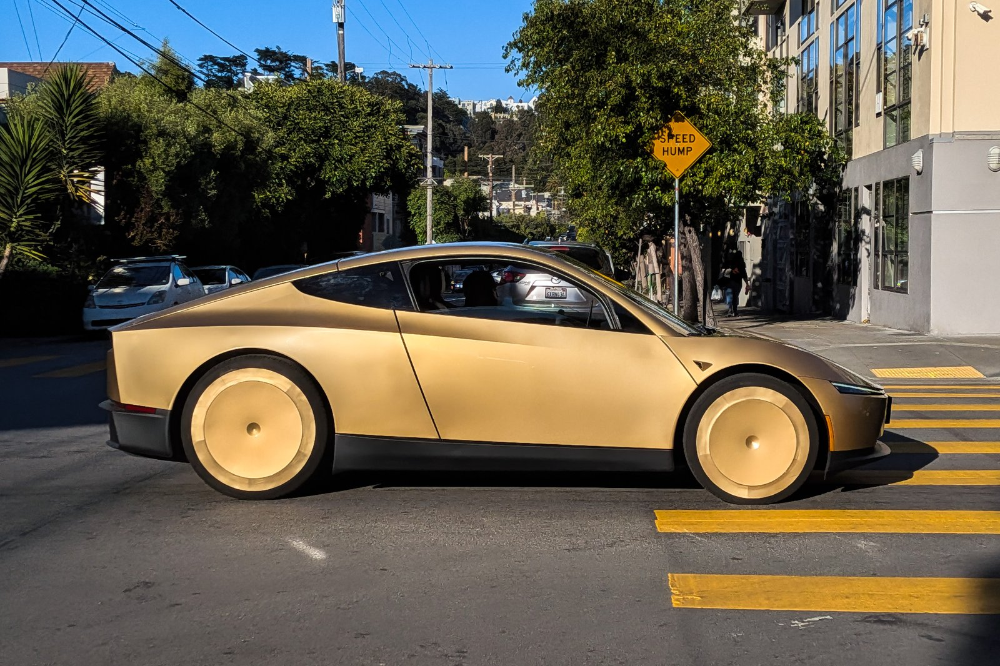

DEMO
— This is not an offer to sell securities, not a Tesla order form, and not a live fundraise.
Registering interest creates no obligation on either side.
A SWFL Cybercab fleet — if Tesla sells to operators, and if this metro is legally operable.
Panamerica Auto already runs Turo, private rentals, and fleet ops in Southwest Florida.
Tesla’s 3 Sep 2026 business interest form is an inquiry, not an order book.
This page is the local counterpart: qualified interest in a future
vehicle-level partnership, depot, or private placement.
Not live hereTesla Robotaxi is in Miami, Tampa, Orlando — not SWFL
No order bookTesla is not selling Cybercabs to third parties yet
Base case trails Turo13-unit model: Cybercab EBITDA/veh $1,651 vs Turo $3,693

Tesla Cybercab on Harrison Street, San Francisco, June 2026.
Photograph by
9yz
via
Wikimedia Commons,
licensed under
CC BY 4.0
(resized for web).
This photograph is not an official Tesla asset.
Panamerica Auto is not affiliated with Tesla, Inc.
The actual bet
Operator density in SWFL — not a robotaxi coupon
Physical AI is a fleet P&L. Utilization, take rate, insurance, and who owns
the residual decide it. We already do the unglamorous work on Turo. Cybercab,
if it arrives as a third-party vehicle, still needs a local operator.
What is true this week
Tesla started Cybercab production at Giga Texas (Feb 2026), registered the first Texas units
late August, and began paid Austin rides 4 Sep 2026. The same week it published a form asking
businesses about fleet purchase and mobility hubs. No published price. No allocation. No
third-party sales.
What is true in Florida
Tesla Robotaxi is live in Miami (3 Jul 2026) and Tampa / Orlando (21 Jul 2026), mostly Model Y
geofences. Lee, Collier, Charlotte, and Sarasota counties are not on that map.
SWFL demand (RSW / PGD, snowbirds, barrier islands) is a later metro, not a current one.
What Panamerica actually is
A SWFL rental and fleet-ops shop — Turo, private rentals, maintenance and service coordination.
We do not sell cars. The Cybercab path is: keep the Turo cashflow, stand up depot/charging/ops
discipline, and be ready if Tesla sells units to operators in a metro we can legally run.
Phasing
An option with gates — not a 2026 delivery promise
0
Now — Turo / private fleet ops
Live SWFL rentals and maintenance coordination. This is the cashflow. It does not pause for a Cybercab story.
1
Depot + charging + incident playbook
Site, power, cleaning loop, after-hours response. Useful for Turo already; required for any AV pod. Gate: a real site, not a slide.
2
First Cybercab pod — only if two gates open
Tesla actually sells to third-party operators and Florida commercial AV rules cover this metro. Until both are true, there is no pod to fund.
3
Scale only on measured utilization
Add units from earned density (airport + snowbird corridors), not from a deck. If take rate, insurance, or residuals eat the model, we stop.
Illustrative unit economics
Three scenarios. Base case does not beat Turo.
Planning estimates from our internal Tesla-Robotaxi vs Turo model
(tesla-robotaxi-pitch, 13-vehicle set, pre-tax, first-pass).
Not a forecast, not audited, not investment advice. Tesla network terms are not a public contract.
Conservative
Headwinds
−$10,873Cybercab EBITDA / vehicle / yr
Turo in this preset: +$4,790 / veh
40% network utilization · 12 earning hours
$0.50 / mile gross · 35% Tesla take
$50k vehicle · $6k insurance / veh
Robotaxi is cash-flow negative. This is a real failure mode, not a footnote.
Fleet EBITDA ~$21k vs Turo ~$48k on 13 units. Extra capex is not recovered at these inputs. Break-even vs Turo wants ~62% util or ~$0.66/mi.
Optimistic
Scale economics — not the plan
+$21,941Cybercab EBITDA / vehicle / yr
Turo in this preset: +$679 / veh
70% utilization · 16 earning hours · 18 mi / hour
$0.70 / mile gross · 25% Tesla take
$30k vehicle (Musk volume target, not a quote)
This is the brochure case. We will not raise against it. It is here so you can see how hard the levers have to work.
Key shared assumptions (13-unit planning set)
Horizon 5 years · 20% down · 8% / 5-year loan · pre-tax (tax toggle off)
Base Cybercab fleet capex ≈ 13 × $40k + $26k charging infra
Base equity down payment ≈ $109k Cybercab vs $91k Turo
Base Cybercab FCF after debt is negative (~−$88k / yr) — same as Turo in this first-pass, which also shows negative FCF after debt
Regulatory compliance allowance $15k–$50k / yr fleet-level depending on preset
Replace these with SWFL Turo actuals and real Tesla commercial terms before any capital decision
Risks — read before the form
The ways this does not work
Tesla may never sell you a Cybercab.
The Sep 2026 form is interest collection. Tesla can keep the network in-house, prioritize its own fleet, or change terms. Panamerica has no allocation and no Tesla contract.
SWFL is not a Tesla Robotaxi metro.
Florida live zones as of Sep 2026 are Miami, Tampa, and Orlando. A Fort Myers / Cape Coral / Naples / Punta Gorda geofence is a hope, not a schedule.
Take rate, insurance, and residuals dominate the P&L.
A 30% network take on $0.60/mi already puts base-case Cybercab behind Turo. AV insurance and purpose-built residuals are poorly known. High-mileage maintenance is not a Tesla Model 3 Turo analog.
Regulation is a hard gate.
Cybercab has no steering wheel or pedals. Federal safety norms, NHTSA evaluation, and Florida AV commercial rules can delay or forbid unsupervised operation in this market. We will not “operate anyway.”
This page is not a security.
Filling the form does not buy equity, a vehicle, a yield, or a slot. A future private placement, if any, would be a separate, counsel-led process with its own documents — not this HTML.
Capital at this shop is not looking for a science project.
Overdue operating expenses outrank a speculative AV raise. If the gates above are closed, there is nothing to fund.
How interest is categorized
Four ways to be useful — none of them is “buy shares”
A
Capital partner
Indicative interest in a future private placement or vehicle-level partnership, if counsel opens a path. Accredited self-attestation required on this demo form. Not a subscription.
B
Owner-operator unit
You might bring a vehicle (today’s Turo fleet, or a future Cybercab if Tesla sells to you) and want local ops. Still not a security we are selling.
C
Depot / land / power
Charging, staging, cleaning bay, or a site near RSW / PGD / Cape Coral. This is the bottleneck that is real even if Cybercab never arrives.
D
Ops / vendor
Detail, mobile service, after-hours incident, insurance, or counsel. The fleet still needs humans around the machine.
Interest form
Register interest — demo only
Validated in the browser, confirmation on-page, no backend yet.
Submitting this does not invest, reserve a vehicle, or start a Tesla order.
Tesla’s form is
tesla.com/robotaxi/interest.
Pick the role that matches how you might help.
Capital-partner interest needs an accredited self-attestation.
Check the demo acknowledgment. Nothing you submit is a commitment.
FAQ
Short answers
Can I buy a Cybercab from Panamerica?
No. We do not sell vehicles. Tesla is not taking Cybercab orders. Nobody here can sell you one.
Are you raising a fund on this page?
No. This HTML is a demo. A real raise would be a separate, counsel-led process with offering documents. That process is not open.
Is Panamerica affiliated with Tesla?
No. We may fill Tesla’s public interest form like any other operator. That is not a partnership.
Why collect “investment” interest at all?
Because the interesting question is who funds a local operator when (if) third-party Cybercabs exist. The honest answer today is: express interest, wait for gates, do not wire.
Where do the dollar figures come from?
An internal first-pass model comparing a 13-unit Turo-style fleet to a 13-unit Cybercab-style fleet. Defaults are planning estimates. Replace them with SWFL actuals and Tesla’s real commercial terms before treating any number as a decision.